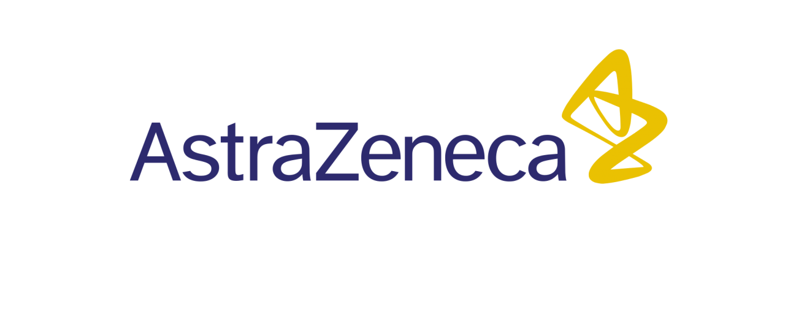
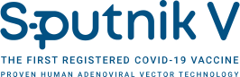
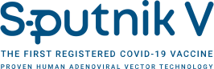
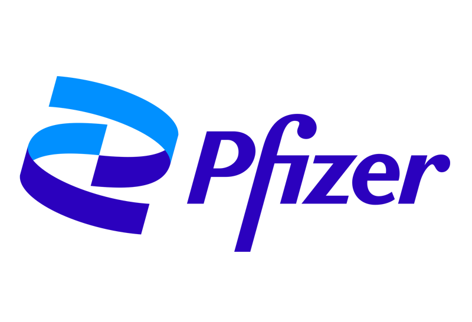
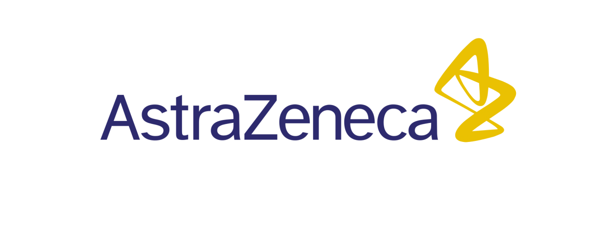
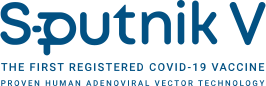

---------------

 

เอ็มอาร์เอ็นเอ (mRNA) วัคซีนกลุ่มนี้ ใช้เทคโนโลยีใหม่สังเคราะห์สารพันธุกรรมเอ็มอาร์เอ็นเอ (messenger RNA: mRNA)
ที่เฉพาะเจาะจงกับเชื้อไวรัส วัคซีนจะทำหน้าที่พา mRNA เข้าเซลล์ และ กํากับให้เซลล์ผลิตสารโปรตีนสไปค์ของเชื้อไวรัส
ซึ่งโปรตีนนี้จะกระตุ้นระบบภูมิคุ้มกันของร่างกายให้สร้างแอนติบอดีขึ้นมาต่อต้านเชื้อ วัคซีนที่มีใช้ในปัจจุบัน
ได้แก่ วัคซีนของบริษัท Pfizer และ Moderna จากข้อมูลในปัจจุบันวัคซีนชนิดนี้มีประสิทธิภาพในการป้องกันโรคได้ประมาณ
95% ป้องกันการป่วยรุนแรงและป้องกันการเสียชีวิตได้ 100% วัคซีนของบริษัท Pfizer ควรได้รับการฉีด 2
เข็มเข้ากล้ามเนื้อ ห่างกัน 3 สัปดาห์ ส่วน วัคซีนของบริษัท Moderna ควรได้รับการฉีด 2 เข็มเข้ากล้ามเนื้อ ห่างกัน 4
สัปดาห์
>> อ่านเพิ่ม <<
ตัวอย่างวัคซีนกลุ่มนี้
---------------

วัคซีนกลุ่มนี้ใช้ไวรัสที่สามารถตัดแต่งพันธุกรรม เช่น ไวรัสอะดีโน
(Adenovirus)โดยนำมาดัดแปลงพันธุกรรมให้ไม่สามารถแบ่งตัวได้ และใส่สารพันธุกรรมของไวรัสโรคโควิด19 ติดไปด้วย
เมื่อนํามาฉีดไวรัสพาหะเหล่านี้จะเลียนแบบการติดเชื้อตามธรรมชาติ
โดยกระตุ้มภูมิคุ้มกันทั้งระบบให้สร้างแอนติบอดีย์ต่อไวรัสโรคโควิด19 ตามสารพันธุกรรมที่ใส่เข้าไป
อย่างไรก็ตามแม้ว่าจะเป็นวัคซีนที่ไวรัสอะดีโนไม่แบ่งตัว แต่ยังจัดเป็นไวรัสที่มีชีวิตเมื่อเข้าสู่ร่างกาย
จึงยังไม่แนะนำให้ใช้ในผู้ที่มีภูมิคุ้มกันบกพร่องอย่างมาก จนกว่าจะมีข้อมูลที่ชัดเจนมากกว่านี้
ปัจจุบันวัคซีนชนิดนี้ที่ใช้กันแพร่หลายมี 4 แบรนด์ ได้แก่ ไวรัสอะดีโนของชิมแพนซี (Chimpanzee adenovirus)
โดยบริษัท Astra Zeneca มีประสิทธิภาพป้องกันอาการประมาณ 70-80% ป้องกันการเสียชีวิตได้ 100%,
ไวรัสอะดีโนของมนุษย์สายพันธุ์ 5 (Human adenovirus type 5) โดยบริษัท CanSinoBio มีประสิทธิภาพป้องกันอาการประมาณ
60%, ไวรัสอะดีโนของมนุษย์สายพันธุ์ 26 (Human adenovirus type 26) โดยบริษัท Johnson and Johnson
มีประสิทธิภาพป้องกันอาการประมาณ 64-72% และ ไวรัสอะดีโนของมนุษย์สายพันธุ์ 5 และ 26 (Human adenovirus type 5
and26) โดยบริษัท Gamaleya ของรัสเซีย มีประสิทธิภาพป้องกันอาการประมาณ 90%
>> อ่านเพิ่ม <<
ตัวอย่างวัคซีนกลุ่มนี้
---------------


วัคซีนที่ผลิตโดยเทคโนโลยีนี้ ทั่วโลกมีความคุ้นเคยมานาน เพราะใช้ในการผลิตวัคซีนหลายชนิด เช่น
วัคซีนป้องกันไข้หวัดใหญ่ วัคซีนป้องกันไวรัสตับอักเสบบี เป็นต้น ผลิตโดยการ สร้างโปรตีนของเชื้อไวรัส ด้วยระบบ cell
culture, yeast, baculovirus เป็นต้น แล้วนํามาผสมกับสารกระตุ้นภูมิ
เมื่อฉีดเข้าสู่ร่างกายจะกระตุ้นให้ร่างกายสร้างแอนตีบอดีต่อต้านโปรตีนสไปค์ของไวรัสโรคโควิด19
วัคซีนที่มีใช้ในปัจจุบันคือ วัคซีนแบรนด์ Novavax ซึ่งผลิตจาก baculovirus และใช้ Matrix M เป็นตัวกระตุ้นภูมิ
มีประสิทธิภาพป้องกันอาการประมาณ 60-90% ป้องกันการเสียชีวิตได้ 100%
>> อ่านเพิ่ม <<
ตัวอย่างวัคซีนกลุ่มนี้
---------------
วัคซีนกลุ่มนี้ผลิตโดยนําไวรัสโรคโควิด19 มาเลี้ยงขยายจํานวนมาก และนํามาทำให้เเชื้อตาย
การฉีดวัคซีนจะกระตุ้นให้ร่างกายสร้างภูมิคุ้มกันต่อไวรัสทุกส่วน เสมือนได้รับเชื้อไวรัสโดยตรงแต่ไม่ทำให้เกิดโรค
เพราะเชื้อตายแล้ว เทคโนโลยีนี้เป็นวิธีที่ใช้กับวัคซีนตับอักเสบเอ โปลิโอชนิดฉีด
จึงมีความคุ้นเคยในประสิทธิภาพและความปลอดภัยมานาน แต่เนื่องจากการเพาะเลี้ยงไวรัสต้องใช้ความระมัดระวังมาก
ทําให้ผลิตได้ช้าและมีราคาแพง วัคซีนที่มีใช้ในปัจจุบัน ได้แก่ วัคซีนของบริษัท Sinovac
มีประสิทธิภาพป้องกันอาการประมาณ 50-70% ป้องกันการเสียชีวิตได้ 100%
>> อ่านเพิ่ม <<
ตัวอย่างวัคซีนกลุ่มนี้
---------------
ข้อมูลจาก พญ.ร่มเย็น ศักดิ์ทองจีน ศูนย์โรคติดเชื้อ โรงพยาบาลสินแพทย์ รามอินทรา